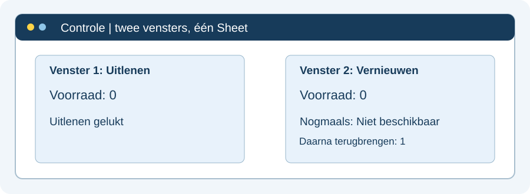

Werkboek Product | van taak naar werkende functie
Werk in jullie bestaande project. B01 is oefenmateriaal. Voorbeeld: open de live B01-demo met je Fioretti-account.
 Voorbeeld:
Voorbeeld: Product-route (5H en 6V): laat de gebruiker de taak van begin tot eind uitvoeren. Backend-route (4H, 4V en 5V): bouw een werkende backend met een database en test één bewerking zonder scherm. De rol Product kan in zo'n team het scherm en de melding maken, maar dat vervangt de Backend-eis niet. Voor Google Sheets, Apps Script, GET en POST gebruik je het bestaande technische B01-werkboek. Eén installatie per team is genoeg.
1. Welke taak doet de gebruiker? | 30 november

Opdracht: Speel in B01 twee keer de gebruiker. Bij voorraad 1 klik je op Uitlenen. Bij 0 probeer je het weer. Vul schema B in en plaats het als eigen reactie onder D. Stem je ontwerp af met de testreactie van Kwaliteit. B01-voorbeeld: ‘Een leerling leent B01. Bij 1 lukt het, bij 0 niet.’
Klaar als: kun je zonder hulp zeggen waar de taak begint, wat de gebruiker doet en wat die in beide situaties terugziet? Zijn de twee verwachte uitkomsten ingevuld?
Jullie project: kies één taak en kopieer schema B en plaats je ontwerp en bestaande bewijslinks als reactie onder D.
2. Bouw de handeling | 4 december

Opdracht: Kijk hoe B01 voorraad, knop en melding bij elkaar zet. Probeer desgewenst MVP 2. Maak in jullie project één zichtbare handeling met een leesbare uitkomst. Een Product-team laat de hele taak werken. Bouw en voeg de onderdelen samen volgens de aansluitafspraken met Manager. In een Backend-team sluit Product het scherm aan op de backend van het team. Gebruik de technische handleiding alleen als jullie deze opbouw nodig hebben.
Klaar als: kun je de handeling uitvoeren? Zie je na afloop meteen wat gelukt is en wat niet? Begrijpt een teamgenoot aan de bestandsnaam en commitnaam wat je hebt toegevoegd? Laat je de juiste toestand zien na verversen als jullie functie die moet onthouden?
Jullie project: maak de gekozen taak in jullie eigen code, bewaar een commit met een korte naam, bijvoorbeeld toon-voorraad of voorkom-dubbel-uitlenen. Gebruik bestandsnamen die zeggen wat erin staat, zoals VoorraadScherm.html of uitleen.js. Een B01-kopie is geen eigen functie.
3. Verbeter na twee tests | 4 en 8 december

Opdracht: Laat Kwaliteit uiterlijk 4 december beide situaties uitvoeren en de eerste uitkomsten en één verbeterpunt in E noteren. Bekijk samen wat er echt gebeurde. B01 gaf eerst bij voorraad 0 ten onrechte ‘Gelukt’. Na verbetering toont het ‘Niet beschikbaar’. Werk één punt bij en noteer de wijziging en beide hertests uiterlijk 8 december om 16.00 uur in I. Marketing vult bij J de klantwaarde aan in D, I verwijst daarnaar.
Klaar als: komen de melding en gegevens overeen? Staan de eerste uitkomsten en het verbeterpunt in E en staan de twee hertests in I?
Jullie project: link vanuit de team-README naar D, E, I en M. E bevat de code/commit, de eerste versie, eerste testuitkomsten en verbeterpunt. I bevat de wijziging en beide hertests en verwijst naar de klantwaarde in D. Kopieer bewijs niet.
4. Laat iemand het zelf proberen | 8 december en mondeling

Opdracht: Bereid vóór 8 december de drie mondelingvragen voor in M. Geef iemand daarna de link naar jullie geteste versie en de stappen onder Zo probeer je het in de team-README. Laat die persoon de gewone en lastige situatie proberen. Manager levert uiterlijk 8 december om 16.00 uur één team-README-link in via het eindformulier #3. Tijdens het mondeling tussen 10 en 17 december wijs je je eigen ontwerp of code aan.
Klaar als: kan iemand binnen twee minuten beginnen en de uitkomst zien? Kun jij uitleggen wat je zelf maakte, hoe het werkt en wat jullie verbeterden? Voorspel wat er bij een nieuwe invoer gebeurt en leg uit waarom. Vertel wat je teamgenoot inbracht en wat er daardoor veranderde.
Jullie project: gebruik de bestaande README, ontwerp, testresultaten en commit. Dit werkboek vraagt geen extra bestand of inlevering.